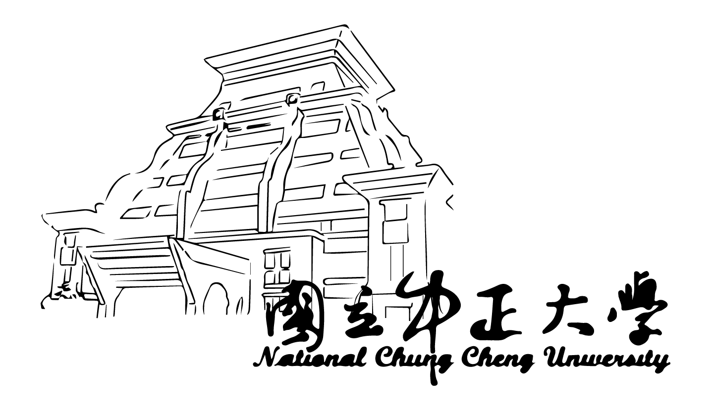

竹林產業論壇
嘉義竹林的覆蓋率甚大，竹炭產業在嘉義地區深具潛力，竹醋液廣泛運用於農業、醫藥及民生。
本次針對竹林產業的論壇為了響應及積極配合教育部推動的大學社會責任實踐計畫，希望能夠結合及匯流中央、地方的能量，協助在地社會、民生、產業與文化之深化與發展。
本次針對竹林產業的論壇為了響應及積極配合教育部推動的大學社會責任實踐計畫，希望能夠結合及匯流中央、地方的能量，協助在地社會、民生、產業與文化之深化與發展。
林相更新、循環農業、竹林產業應用以及文創行銷四大領域皆為本次論壇的主旨。
我們希望藉由整合跨領域之人才與技能，協助竹林產業發光發熱，並且從竹炭黑金開發出新的生產經營型態，再創竹林新風華
我們希望藉由整合跨領域之人才與技能，協助竹林產業發光發熱，並且從竹炭黑金開發出新的生產經營型態，再創竹林新風華
竹林除了可以發展竹子本身的價值以外還可發展文化觀光，是瑰寶。
—— 臺文創應研究所所長 江寶釵
中正大學各系所將與工研院、在地企業合作，從奈米技術到觀光行銷、課程媒合、人才培育，成為竹林產業最重要的知識後盾，將是大學在地實踐，善盡社會責任的最佳案例。
—— 中正大學研發長 黃士銘
我對嘉義竹林產業的發展深具信心，願意協助整合中央與地方政府的相關資源，全力協助嘉義竹林產業升級，青年返鄉創業。
—— 行政院雲嘉南服務中心副執行長 徐文志



All Rights Reserved.